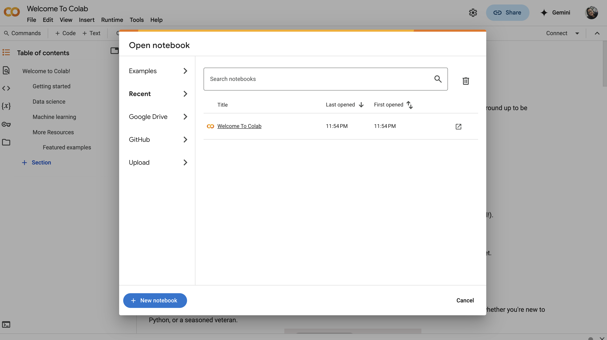
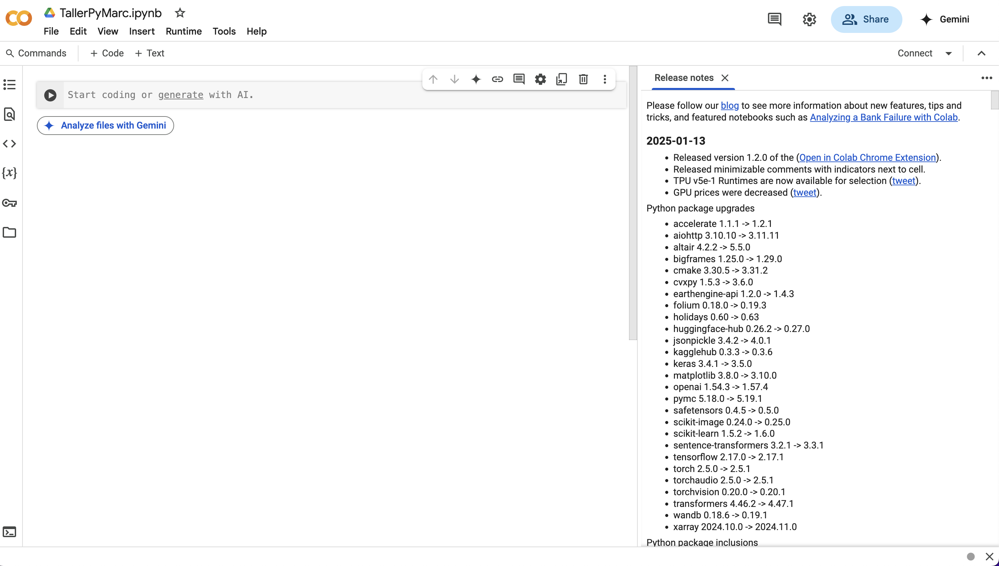
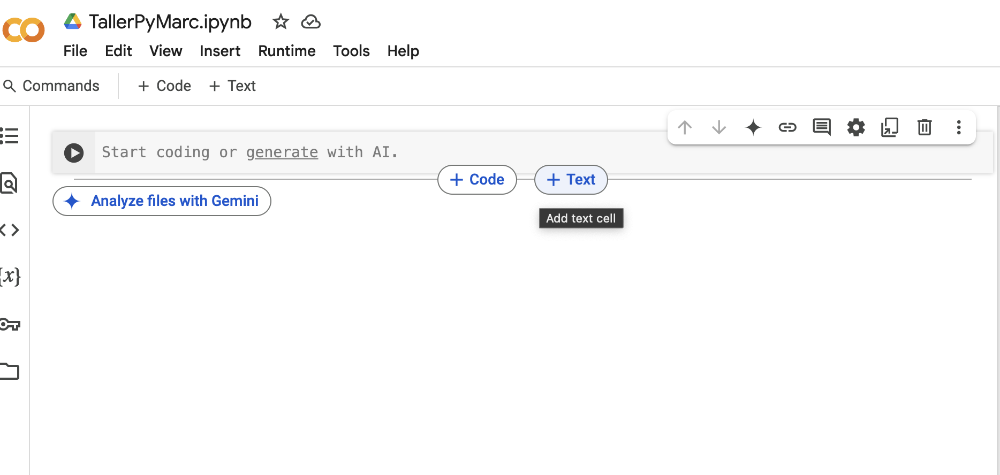
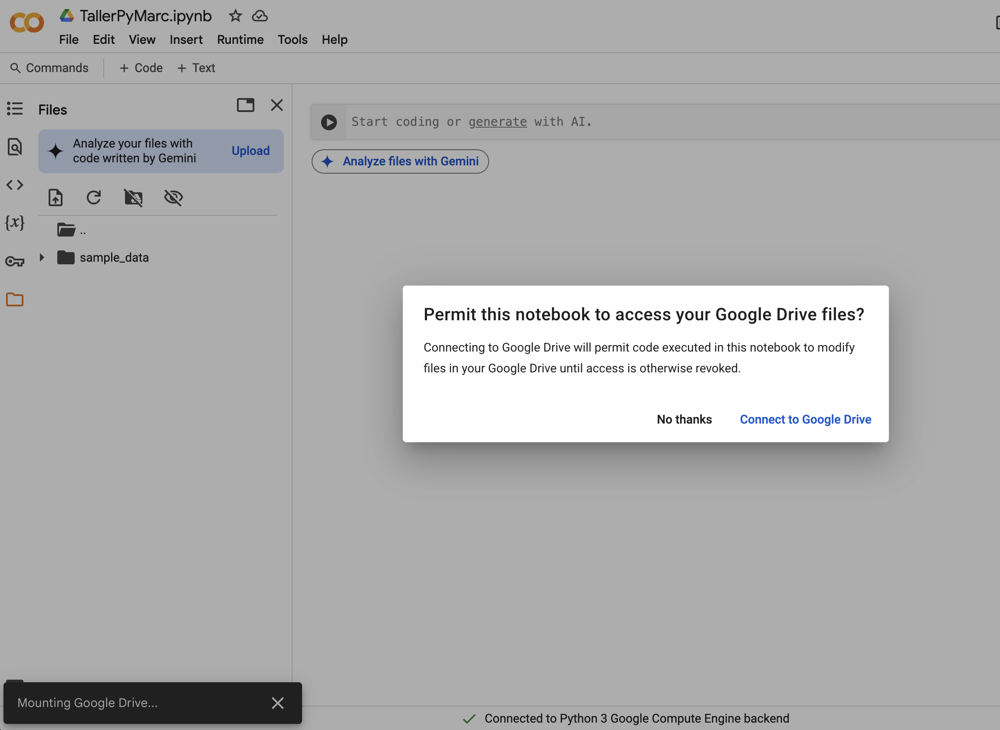

!pip install pymarcRequirement already satisfied: pymarc in /Users/if224/.local/environments/reportsdb/lib/python3.12/site-packages (5.1.2)Descripción:
En este taller, se enseñará cómo utilizar Python y PyMARC para gestionar registros MARC en masa de manera eficiente y automatizada. Se explorarán métodos para extraer, modificar y guardar metadatos bibliográficos, facilitando su manejo en bibliotecas y archivos.
Temas a tratar:
Agenda Tentativa (1hr 45 minutos):
Google Colab (abreviación de Google Colaboratory) es una plataforma gratuita creada por Google que permite escribir y ejecutar código en Python directamente desde tu navegador, sin necesidad de instalar nada en tu computadora. Es especialmente popular entre personas que trabajan con ciencia de datos, aprendizaje automático, análisis de datos y educación.
Características principales:
Basado en Jupyter Notebooks: Usa el mismo formato que los notebooks de Jupyter (.ipynb), lo que permite combinar código, texto, imágenes y visualizaciones en un solo documento.
Ejecución en la nube: Todo corre en los servidores de Google, así que no necesitas una computadora potente.
Integración con Google Drive: Puedes guardar tus notebooks directamente en tu cuenta de Drive y compartirlos fácilmente.
Colaboración en tiempo real: Al estilo de Google Docs, puedes trabajar con otras personas en el mismo notebook.

Crea un nuevo cuaderno pulsando el botón “New Notebook” (Nuevo cuaderno).


Para conectar tu Google Colab a to Google Drive y poder acceder a tus archivos, has lo siguiente:

Preparar el ambiente de programación significa asegurarse de que tenemos todo lo necesario para trabajar: las herramientas, las bibliotecas y las versiones correctas.
Es importante instalar las bibliotecas que sabemos que necesitaremos porque eso nos permite comenzar a trabajar sin errores por falta de funciones.
A veces no sabemos todo lo que vamos a necesitar desde el inicio, y eso está bien: podemos ir agregando nuevas bibliotecas a medida que nuestro código se desarrolla o cambia.
Una biblioteca (o librería) en Python es un conjunto de funciones y herramientas ya escritas por otras personas, que puedes usar para hacer tareas específicas sin tener que escribir todo el código desde cero.
Por ejemplo, si quieres trabajar con fechas, hay una biblioteca llamada datetime; si quieres leer archivos csv, hay una biblioteca llamada csv, si quieres leer archivos MARC, puedes usar la biblioteca pymarc; y si necesitas organizar, analizar o limpiar datos en forma de tabla, una opción muy común es la biblioteca pandas.
En Google Colab, instalar una biblioteca es muy sencillo. Solo necesitas escribir una línea de código en una celda, empezando con el signo de exclamación (!) para usar comandos del sistema.
Requirement already satisfied: pymarc in /Users/if224/.local/environments/reportsdb/lib/python3.12/site-packages (5.1.2)Este comando le dice a Colab que use pip (el instalador de paquetes de Python) para instalar la biblioteca pymarc.
Algunos puntos útiles:
Solo necesitas hacerlo una vez por sesión.
Si la biblioteca ya está instalada, Colab te lo indicará.